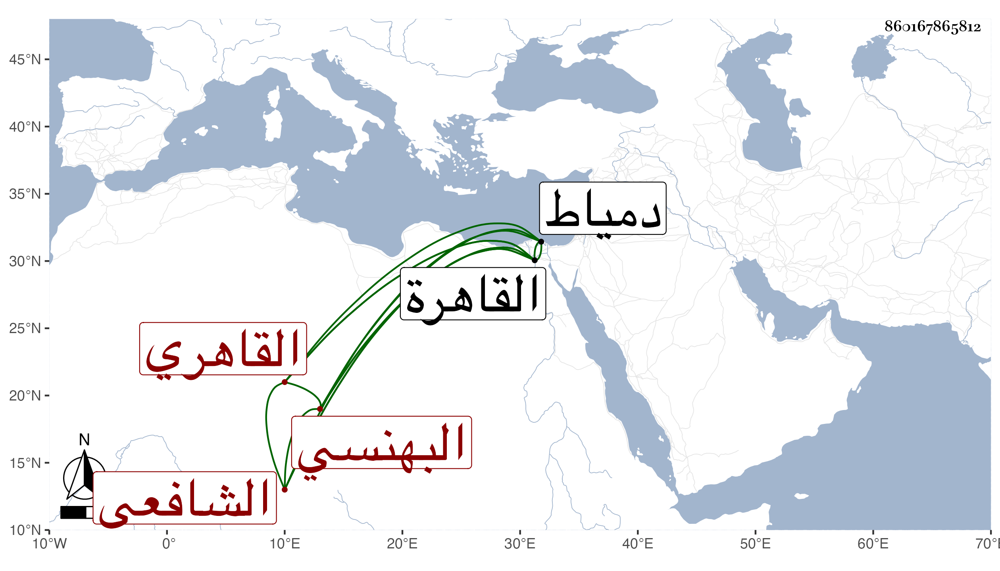

0902Sakhawi.DawLamic.ITO20230111-ara1.EIS1600.860167865812
Biography ID: 860167865812
إبراهيم بن علي بن أحمد بن أبي بكر بن محمد بن عبد الرحمن بن محمد البرهان البهنسي الأصل القاهري الشافعي . ولد في سنة إحدى وستين وسبعمائة فيما كتبه بخطه وقول غيره سنة خمس وستين غلط بالقاهرة وقرأ بها القرآن لأبي عمرو على الشيخ محمد التروجي وحفظ العمدة والمنهاجين الفرعي والأصلي وألفية ابن مالك وعرض على السراج بن الملقن وعبد الخالق بن علي بن الفرات وأجازا له وأخذ النحو عن الشهاب الأميوطي والفقه عن فتح الدين التزمنتي والعز السيوطي وبحث في الأصول على علي بن حمران المنوفي وحج مرتين الأولى قبل البلوغ والأخرى في سنة ست وثمانين ودخل دمياط على قدم التجريد وتنزل في صوفية البيبرسية . وولع بالنظم وبرع فيه بحيث أتى منه بما يستطرف وخمس البردة تخميسا غريبا فإنه افتتح بصدر بيت الأصل وختم بعجزه وكلامه بينهما وكتب عنه من نظمه الفضلاء وممن كتب عنه ابن فهد والبقاعي . ومات في أوائل ربيع الأول سنة ست وأربعين بالقاهرة . ومن نظمه :
| لما رأيت الورد ضاع بخده | وعذاره آس عليه دائر |
| أيقنت أن القد غصن مثمر | لجماله وعليه قلبي دائر |
ومنه :
| بانوا فبان الصبر من بعدهم | والحزن قد وافى وولى السرور |
| وخلفوا الصب حليف الأسى | ألا إلى الله تصير الأمور |
